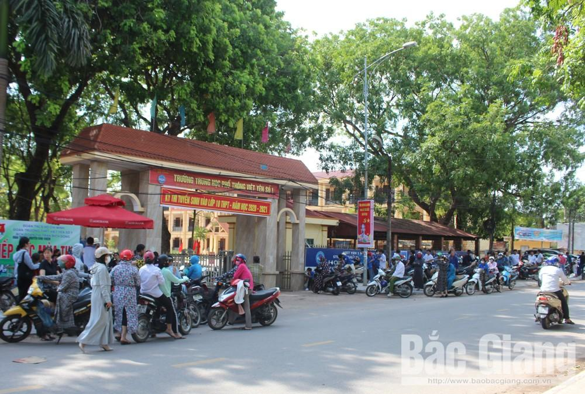

Tuyển sinh vào lớp 10 THPT tại Bắc Giang: Nhiều thí sinh làm tốt bài thi Tiếng Anh
(Theo BGĐT) - Chiều 16/7, các thí sinh hoàn thành môn thi Tiếng Anh tuyển sinh vào lớp 10 THPT công lập năm học 2020-2021.
Với tâm lý phấn khởi sau bài thi môn Ngữ văn diễn ra buổi sáng, buổi chiều các em bước vào làm bài môn Tiếng Anh.
Dù nắng nóng nhưng tại các điểm thi, rất nhiều phụ huynh đứng ở cổng trường hoặc ngồi quán nước hồi hộp chờ con làm bài.

Môn thi Tiếng Anh diễn ra trong 60 phút với hình thức thi trắc nghiệm kết hợp tự luận (các kỹ năng nghe, đọc và viết), trong đó nội dung trắc nghiệm (8 điểm) và tự luận (2 điểm).
Phần thi trắc nghiệm có nội dung nghe và các phần chọn đáp án đúng thông qua đọc hiểu các đoạn văn, điền vào chỗ trống, phân biệt cách phát âm các từ; phần tự luận viết lại câu sao cho nghĩa không thay đổi.
 |
Sau khi kết thúc bài thi (Hiệp Hòa số 1) |
Qua khảo sát tại một số hội đồng thi, đa số học sinh cho biết đề “dễ thở”, vừa sức, đều đã được ôn luyện, bạn nào có lực học trung bình có thể đạt điểm 5 đến 6.
Tại Trường THPT Ngô Sĩ Liên, nhiều thí sinh cho hay làm bài tốt dù một số câu ở bài nghe và phần điền từ vào chỗ trống khá phức tạp.
Em Hà Phương, học sinh Trường THCS Trần Nguyên Hãn là thí sinh đầu tiên bước ra khỏi phòng thi chia sẻ: “Em khá bất ngờ vì đề thi năm nay không khó như em nghĩ. Phần em thấy khó nhất trong đề thi là một số câu trong bài nghe. Em nghĩ mình có thể đạt ít nhất 8 điểm.”
|  |
Phụ huynh chờ con làm bài thi Tiếng Anh tại khu vực Trường THPT Việt Yên số 1. |
{kind=link}
Còn em Dương Văn Ninh, xã Ninh Sơn (Việt Yên) cho biết, phần nghe, đọc hiểu dễ đạt điểm song phần tự luận khó hơn do viết lại câu, phải nắm chắc ngữ pháp và tự tin mình có thể đạt 7-8 điểm. Các phần thi liên quan đến kỹ năng nghe, đọc hiểu, viết lại câu đều rất quen thuộc với kiến thức các em đã được học trong chương trình.
Tuy nhiên, để làm được các phần đòi hỏi học sinh phải thuộc, nhớ nhiều từ vựng, nắm chắc cấu trúc ngữ pháp. Nếu học sinh khá sẽ đạt 7 đến 8 điểm, những em xuất sắc có thể điểm 9 hoặc hơn.
 |
Trao đổi bài sau khi kết thúc thời gian thi |
Thông tin từ Sở Giáo dục và Đào tạo, kết thúc ngày thi đầu tiên (16/7), vắng 112 thí sinh do ốm và không rõ lý do, trong đó buổi sáng vắng 110 em, chiều vắng 2 em, nhiều nhất là điểm thi Trường THPT Mỏ Trạng (Yên Thế). Công tác tổ chức thi bảo đảm an toàn, nghiêm túc; không có giáo viên, học sinh vi phạm quy chế.
Sáng mai (17/7), thí sinh sẽ thi môn Toán, thời gian làm bài 120 phút, đây cũng là môn thi cuối của kỳ thi tuyển sinh vào lớp 10 THPT công lập năm học 2020-2021
BBT